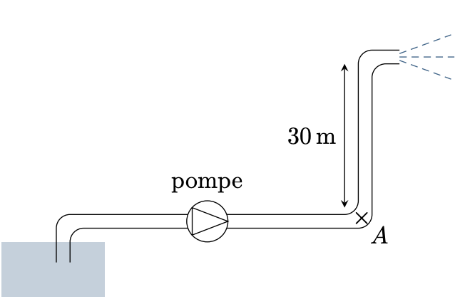

PrepOral
[PC] [Maison]
Lance incendie
Enoncé
On considère un tuyau de pompier de diamètre $d = 70\,\text{mm}$, montant à une hauteur de $30\,\text{m}$, où il se termine par une lance. Une pompe impose un débit volumique $Q = 500\,\text{L}\cdot\text{min}^{-1}$, l’eau étant aspirée à partir d’un bassin à l’air libre. L’eau sort de la lance avec une vitesse d’éjection $v_e = 30\, \text{m}\cdot\text{s}^{-1}$.

1. Quelle doit être la pression au point $A$ pour obtenir une telle vitesse en sortie de la lance ?
On s’intéresse maintenant aux pertes de charge dans le tuyau, exprimées en $\text{Pa}\cdot\text{m}^{-1}$ par :
\[
\kappa = f \frac{\mu v^2}{2d}
\quad \text{avec} \quad f = 2 \times 10^{-2} \ \text{(USI)}.
\]
2. Quelle est l’unité de $f$ ?
3. Quelle puissance doit fournir la pompe, sachant que le tuyau est long de $200\,\text{m}$ au total ?
Commentaires
Encore jamais posé !
Corrigé
1. La vitesse dans le tuyau est : $v=Q/(\pi r^2)$. On applique le théorème de Bernoulli : $$P_A + \mu v^2/2 = P_{atm} + \mu v_e^2/2 + \mu gh \quad P_A=7,8 \; bar$$ 2. Sans dimension.
3. On applique le théorème de Bernoulli en aprtant du bassin : $$Q(P_{atm} + \mu v_e^2/2 + \mu gh - P_{atm} - \mu 0^2/2)= \mathcal{P}-Q\kappa l \quad \mathcal{P}=6,8 \; kW$$